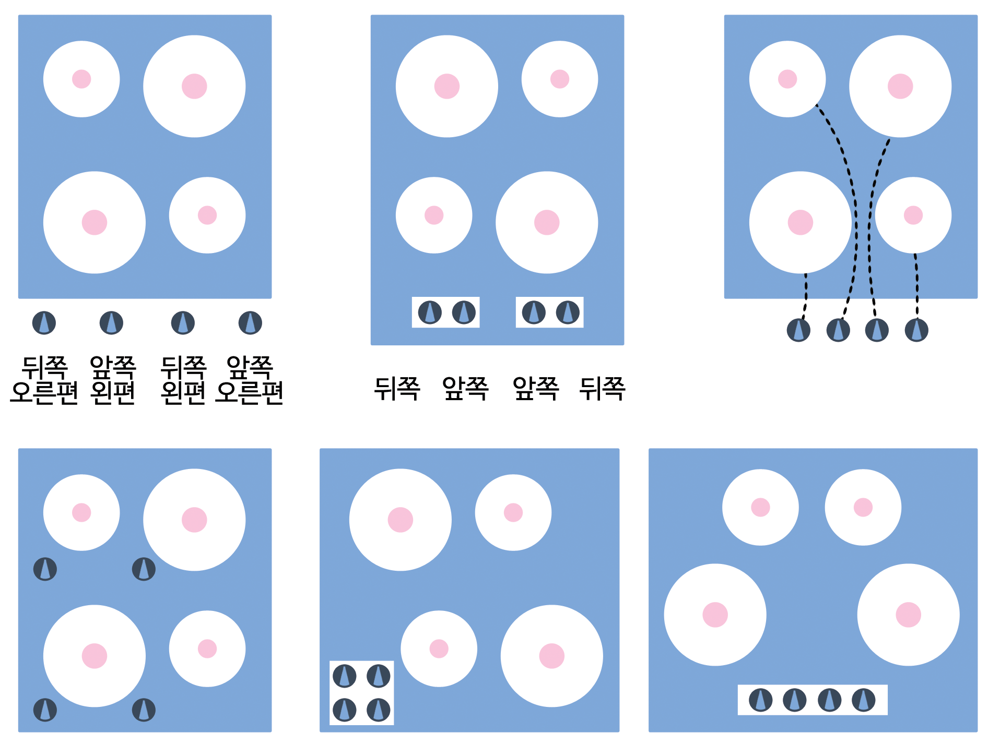
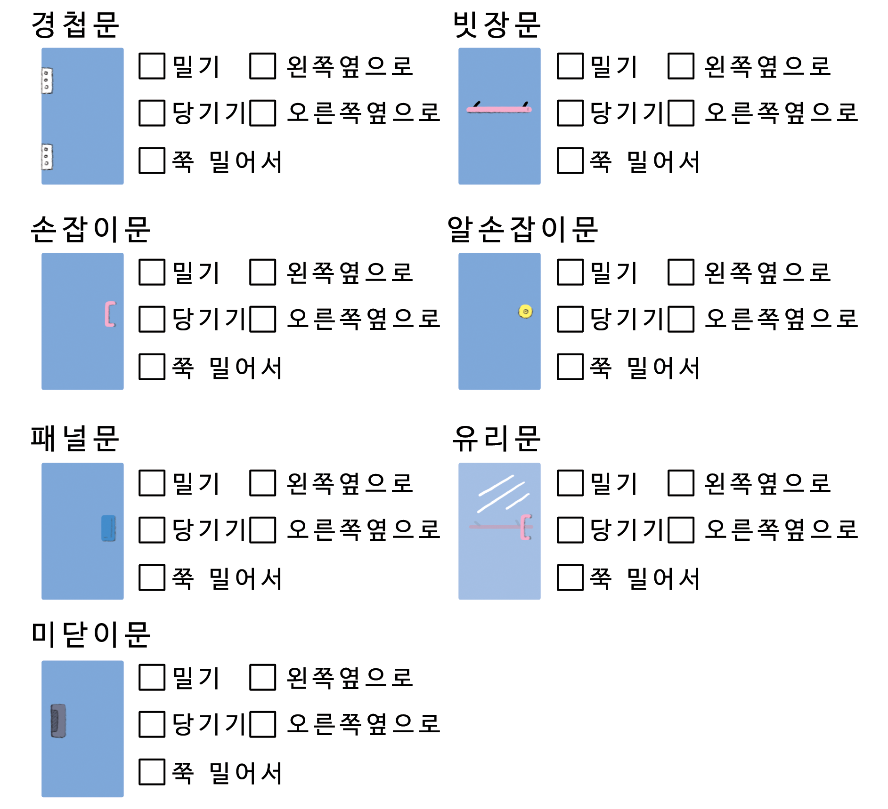
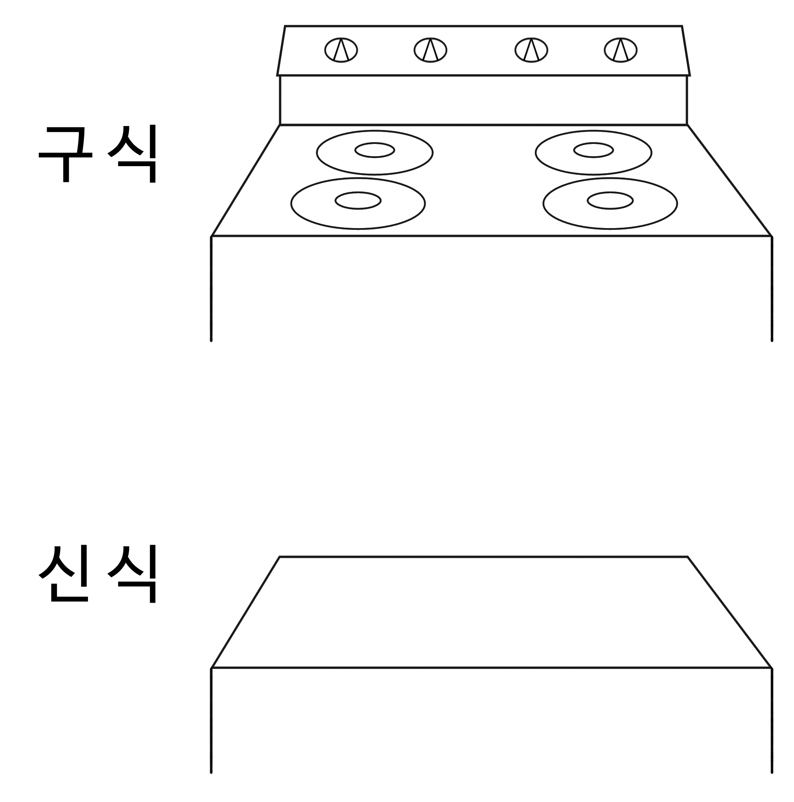

Chapter 6 제 6 부
사람 냄새나는 컴퓨터 — 컴퓨터와 상호작용(Interacting with computers)
사람 냄새나는 컴퓨터
왜 컴퓨터와 잘 지내기는 그다지도 어려울까요? 사람들마다 다양한 에피소드가 있는데, 컴퓨터가 얼마나 사용하기 어려운지? 컴퓨터가 말을 안들어 정말 원하는 것을 하지 못했는지? 계속해서 컴퓨터가 어뚱한 작업을 계속하고, 믿기 힘든 실수를 했는지? 다양한다. 컴퓨터는 일반 보통사람을 위한 것이 아니고, 마법사를 위해 만들어진 것 같다. 하지만, 컴퓨터는 보통 평평한 사람을 위해서 만들어져야만 한다. 왜냐하면, 보통 사람들이 좀더 잘 배우고, 일하고, 재미있게 놀 수 있는 일상 도구이기 때문이다.
여러분들이 컴퓨터와 상호작용하는 컴퓨터 부분을 사용자 인터페이스(user interface)라고 부른다. 가장 중요한 부분(비트, bit)다. 설사 여러분들이 실제 프로그램이 주된 부분을 수행하고, 사용자 인퍼페이스를 단지 컴퓨터를 시작하는 관문으로 생각할지라도, 만약 사용자가 컴퓨터와 상호작용하지 않고, 사용자가 원하는 바를 수행하지 않게 한다면 컴퓨터는 쓸모 없다. 사용자 인터페이스는 매우 설계하고 개발하기 어렵다. 프로그램을 작성할 때, 다른 어떤 프로그램부분보다도 더 많은 노력이 인터페이스에 투여된다는 추정자료도 있다. 몇몇 소프트웨어는 매우 훌륭한 사용자 인터페이스가 있어서, 복잡한 절차도 필요없고, 응용프로그램을 사용하도록 사용자를 끌어 들이는게 거의 눈에 보이지 않는다. 그리고, 전체 산업이 문서 편집기나 스마트폰 같이 그 자체로 정말 기본적인 계산 기능에 접근하기 용이하도록 좀더 똑똑한 인터페이스 아이디어를 기반으로 구축되어 있다.
하지만, 왜 사용자 인터페이스를 사용해야만 할까? 여러분이 친구에게 말하듯이, 왜 컴퓨터에게는 말을 걸 수 없을까? 좋은 질문이다. 언젠가 그럴수도; 그렇지 않을 수도 있다. 하지만 아직은 확실히 아니다: 오늘날 컴퓨터가 얼마나 “지능이 있게” 만들 수 있느지 큰 실무적인 한계가 있다. 이번 활동은 사용자 인터페이스 설계 문제를 이해하는데 도움이 되고, 컴퓨터의 한계에 대해서도 좀더 명확하게 생각하는데 도움이 되고, 종종 컴퓨터 제품을 홍보하는데 활용되는 거짓 과장광고도 조심하는데 도움이 된다.
선생님에게
컴퓨팅은 계산에 관한 것이라기 보다는 의사소통(communication)에 관한 것이다. 컴퓨팅 그 자체로 본질적인 가치는 없다; 컴퓨터 밖 세상에 결과가 소통되어 영향을 미칠 때만 가치가 있다. 이책의 많은 활동은 의사소통에 관한 것이다. 데이터 표현(제1부)은 다른 종류의 정보가 어떻게 컴퓨터에 혹은 컴퓨터간에 소통될 수 있는지에 관한 것이다. 절차의 표현(제3부)은 절차를 컴퓨터와 소통하여 특정 작업을 성취하는 방법에 관한 것이다— 결국, 정말로 “프로그래밍”은 컴퓨터에 설명하는데 자신만의 언어를 사용하는 것이다. 암호화(제5부)는 비밀스럽게 소통하는 방법 혹은 모든 정보를 공개하지 않고 비밀정보를 소통하는 방법에 관한 것이다.
다음 활동은 사람이 컴퓨터와 소통하는 방법에 관한 것이다. 책의 나머지 부분은 잘 설명되는 기술적 사상에 기반하고 있지만, 제6부는 아니다. 어떤 특별한 지식이 학생들에게 필요하지 않다는 점에서 좀더 쉬울 수 있고, 활동이 무엇에 관한 것이고, 좀더 폭넓은 맥락에서 관련성을 찾는다면 일정 수준 이상의 성숙된 지식이 필요하다는 점에서 좀더 어려울 수도 있다. 이번 활동은 대부분의 다른 활동보다 좀더 자세한 설명을 담고 있다. 왜냐하면, 수업 토론시간에 함축된 의미를 추론하는데 도움이 되도록 학생과 선생님에게 충분한 배경 정보를 전달하는게 필요하기 때문이다.
제6부에는 활동이 두개 있다. 첫번째는 휴먼 컴퓨터 인터페이스(human-computer interface), 줄여서 HCI로 알려진 분야에 관한 것이다. 일부 컴퓨터 시스템 특정 사례에 대한 사전 지식에 기대지 않고, 컴퓨팅의 이러한 측면을 언플러그(unplug)하도록, 컴퓨터를 정말 포함하지 않는 새로운 디자인 사례를 개발했다— 하지만 휴먼-컴퓨터 인터페이스(human-computer interface) 설계에 사용되는 근본 원칙은 소개한다. 휴먼 인터페이스 설계는 문화 의존적이기 때문에, 이번 활동에는 반듯이 “정답”이 있는 것은 아니다. 이러한 점이 학생을 당혹스럽게 만들 수도 있다. 두번째 활동은 인공지능(artificial intelligence), 줄여서 AI로 알려진 분야에 관한 것이다. 추측하는 게임을 포함하고 있어서 학생들을 자극해서 컴퓨터가 할 수 있는 것과 할 수 없는 것에 관해서 생각하게 한다.
6.0.0.1 기술적 사고방식을 가진 분들에게
휴먼-컴퓨터 상호작용은 컴퓨터 과학에서 가장 열광적인 연구분야 중 하나가 되었다. 이유는 소프트웨어 제품 성공이 사용자 인터페이스와 얼마나 관련이 있는지 인식하면서부터다. 심리학, 인지과학, 언어학, 사회학, 심지어 인류학 같은 컴퓨터 과학 밖의 다양한 전공분야와도 협업하는 분야다. 거의 컴퓨터 과학 전공자는 이 분야에 훈련을 받지 못했다. “좀더 소프트(soft)”한 주제에 관심있는 사람에게 HCI가 중요한 성장분야를 대표한다.
인공지능은 종종 열받게 하고 논쟁을 불러 일으키는 주제다. 이 책에서는 인공지능 컴퓨터가 멀지 않았다는 AI 애정론자와 원칙적으로 컴퓨터는 지능을 가질 수 없다는 AI 회의론자 사이에서 중용을 지키려고 한다. 목표는 학생들에게 이러한 이슈에 대해서 독립적으로 생각하고, 균형된 시야를 갖도록 격려하는데 있다.
여기 활동은 탁월한 두 책, Don Norman가 저술한 The design of everyday things 책과,John Haugeland가 저술한 Artificial intelligence: the very idea에서 많은 부분 참고했다. 만약 좀더 이 주제를 다루고자 한다면 열정적으로 추천하는 책이다.
컴퓨터는 또다른 중요한 유형의 커뮤니케이션과 관련된다. 이 책에서는 다루지 않는 주제: 컴퓨터 시스템을 개발하는 사람 사이 커뮤니케이션. 컴퓨터를 학습하고, 일자리를 찾아 나선(아마도 대학에서 컴퓨터 과학을 공부하고 졸업한) 학생들이 본인 일이 얼마나 많은 대인 커뮤니케이션(interpersonal communication)을 수반하는지에 대해서 항상 놀라게 된다. 컴퓨터 프로그램은 인류가 만든 가장 복잡한 물건으로 수백만, 혹은 아마도 수십억 부품들이 매우 복잡하게 연동되어 있다. 공동 작업하는 긴밀한 팀이 프로그래밍 프로젝트와 씨름하면서, 상당한 시간을 커뮤니케이션에 투여한다. 제품이 개발되면, 개발팀 일은 매뉴얼, 교육, 전화 상담, 온라인 지원 등등 고객과 커뮤니케이션한다. 광고, 전시회, 데모를 통해서 잠재 고객과 커뮤니케이션하는 문제는 말할 필요도 없다. 학생들에게 아직 컴퓨팅의 대인 커뮤니케이션 측면을 “언플러그(unplug)”하는 실질적인 방법을 찾지 못해서, 이책에서는 다루지 않는다. 하지만, 수업에 참여하는 컴퓨터 전문가가 자신의 경험을 공유하고, 토론 주제로 끄집어 낼수도 있다.
6.1 쵸코릿 공장 - 휴먼 인터페이스 디자인 (Human interface design)
6.1 개요
이번 활동의 목적은 휴먼 인터페이스 디자인 이슈에 대한 인식을 고취시키는 것이다. 잘못된 디자인이 만연된 세상에 살고 있어서, 상호작용하는 인공물이 초래한 문제를 참고 지내는데 익숙해져서, > 오류가 있는 디자인 문제 탓을 하기보다는 우리 자신(“휴먼 오류”, “부적잘한 훈련”, “나에게는 너무 복잡한”)에게 비난의 화살을 돌린다. 컴퓨터로 인해서 이런 이슈가 크게 부각된다. 왜냐하면, > 컴퓨터는 명백한 목적이 없다— 사실 컴퓨터는 완전히 범용이다. 컴퓨터 외양은 무엇을 위한 것이며, 어떻게 동작하는지에 대해서 아무런 단서도 제시하지 않는다.
6.1 교과학습 연계
- 기술: 기술 성과가 사람이 개발한 제품 혹은 시스템인지 이해한다. 또한 기술 성과가 물리적 특성과 기능적 특성을 갖는다는 것을 이해한다.
- 기술: 기술이 디자인을 통한 의도적 개입이라는 것을 이해한다.
6.1 기술
- 디자인 (Design).
- 추론 (Reasoning).
6.1 나이
- 7세 이상
6.1 학습 교재
- 각 그룹 학생마다 필요한 것:
- 문을 어떻게 열지?, 오븐(레인지) 윗면 워크쉬트 사본.
- 아이콘 워크쉬트에 있는 이미지 사본. 빔프로젝터 슬라이드로 보여주거나, 학급에 보여줄 수 있는 카드 형태.
- 아이콘 카드 페이지에 있는 6장 카드 중 카드 하나 이상. 워크쉬트를 개별 카드로 자르고 그룹에 나눠준다.
6.1.1 언플러그드 활동 동영상
| 한글 동영상 | 영어 동영상 |
|---|---|
| 애타게 찾고 있습니다. |
6.1.2 쵸콜릿 공장
6.1.2.1 들어가며
움파-룸파(Oompa-Loompa)로 불리는 요정같은 종족이 거대한 쵸코릿 공장을 운영한다. 움파-루파 종족은 기억력이 매우 좋지 못할 뿐더러 문자 언어도 없다. 이런 연유로, 쵸콜릿 공장을 운영하는데 무엇을 할지 기억하는데 어려움이 많아서, 종종 상황이 좋지 않게 흘러간다. 이런 연유로, 움파-룸파 종족이 운영하기 매우 쉬운 새로운 공장이 디자인되고 있다.
움파-룸파(Oompa-Loompa): Roald Dahl에 양해를 구한다. 동화 챨리와 쵸코릿 공장(Charlie and the Chocolate Factory)을 읽었다면 움파-룸파에 대해서 잘 알 것이다. 만약 읽지 않았다면 신경쓰지 않아도 된다: 이번 활동과 이야기는 관계가 없다.
6.1.2.2 토론
학생들에게 이야기를 서명하고 학생을 작은 그룹으로 나눠라.
움파-룸파가 직변한 첫번째 문제는 김이 모락모락나는 액체 쵸콜릿 양동이를 지고 문을 통과하는 것이다. 움파-룸파는 문을 당겨서, 밀어서, 혹은 옆으로 미끄러뜨려 열었는지 기억할 수 없다. 결과적으로 문에 쾅하고 부딪쳐 끈적한 쵸코릿을 사방에 엎지르게 된다. 학생들은 문을 어떻게 열지? 워크쉬트에 “문(door)”을 채워야 한다. 각 경우에 하나이상이 적절하다. 문 몇개(첫번째 포함) 는 어떻게 여는지 분명하지 않다. 이런 경우, 학생들은 먼저 시도한 것을 기록한다. 학생들이 본인 워크쉬트를 모두 채웠으면, 그룹 전체가 각 문 유형별로 상대적인 장점을 토의한다. 특히, 어떻게 동작하는지를 알수 있도록 얼마나 쉽게 되어있는지, 만약 뜨거운 쵸코릿 양동이를 옮긴다면 얼마나 적합한지가 주요한 토의 관점이 된다. 어떤 종류의 문 손잡이를 쵸코릿 공장에서 사용할지 결정해야 한다.
활동을 이어서 학급 토의시간을 갖는다. 다음 표는 워크쉬트 각각에 대한 간략한 논평이다. 실제 문에는 문을 여는 방법에 대한 단초가 문틀과 경첩에 나와있다. 문을 안으로 혹은 밖으로 열지에 대한 사회적 관례도 있다. 여러분이 다니는 학교에 사용되는 문 손잡이가 어떤 유형인지 식별하고, 적합성에 대해서 토의하세요. (매우 부적절할지 모릅니다!) 혼란스럽게 하는 문을 생각해낼 수 있나요? 이유는? 복도에 있는 문은 안으로 혹은 밖으로 열리나요?— 이유는? (정답: 교실안으로 열린다. 학생이 문열고 나올 때, 복도를 걷고 있는 사람을 문으로 강타하지 못하게 한다. 하지만, 몇가지 상황, 응급상황에서 탈출이 용이하도록, 문을 밖으로 열게 되어있다.)
여기서 핵심 개념은 물체에 대한 행동유도성(affordance)이다. 눈에 보이는 기능— 기본적이고 인지된—으로 이런 외양을 통해서 물체가 어떻게 사용되어지는지 나타낸다. 행동유도성은 물체가 허용하거나 “수용할 수 있는(afford)” 일종의 동작이다. 예를 들어, (거의) 외양으로부터 의자는 앉기에 적합하게, 탁자는 뭔가 놓기 좋게, 손잡이는 돌리기 좋게, (책)꽂이는 뭔가(책) 끼워 넣기 좋게, 버튼은 누루는게 좋다고 알 수 있다. 컴퓨터 인터페이스에서 행동유도성은 버튼 모양, 텍스트 박스, 메뉴 등이 있다. 사용자에게 어떻게 사용되어야 하는지 단서를 준다. 만약 버튼이 뭔가 다르게 생겼다면, 사용자는 버튼을 누르는 것이라고 깨닫지 못할 것이다. 이것이 명백하게 보일지 모르지만, 이런 유형의 문제를 디지털 장치에서 찾기는 어렵지 않다.
| 구분 | 기술 | 구분 | 기술 |
|---|---|---|---|
| 표시없는 문(plain) | 문을 여는 방법을 알 수 없다. 이것외에도 손잡이가 없어서 당기기 보다 필어야 한다. | 라벨 문(labeled) | 라벨이 매우 작은 사용자 매뉴얼 같다. 왜 문에 사용자 매뉴얼이 필요할까? 그리고, 움파 룸파는 읽을 수 없다. |
| 경첩 문(hinge) | 최소 문을 여는 쪽이 어는 쪽이는지 알 수 있다. | 빗장 문(bar) | 이와 같은 손잡이는 통상 당기거나 옆으로 밀어서 연다. |
| 손잡이 문(handle) | 이와 같은 손잡이는 통상 당기거나 옆으로 밀어서 연다. | 알손잡이 문(knob) | 알손잡이(knob)가 어떻게 잡는지는 보여주지만, 당길지 밀지는 알수 없다. 아마도 옆으로 밀어서는 아닐 것이다. |
| 패널 문(panel) | 밀어서 연다는 것이 명확하다. 그밖에 무엇을 할 수 있을까? | 유리 문(glass) | 옆쪽 작은 수평 막대는 “당긴다는” 신호; 또다른 긴 수평 막대는 “민다는” 신호 |
| 미닫이 문(sliding) | 이문은 옆으로 밀어서만 열수 있다. |
문은 매우 단순한 물체다. 복잡한 물체는 설명이 필요할지 모른다. 하지만, 단순한 것은 설명이 없어야 한다. 단순한 물체에 그림, 표식, 혹은 설명서가 필요하다면, 디자인이 실패했다.
- 다른 유형 쵸코릿을 담고 있는 냄비는 다른 온도에서 요리되어야 한다. 예전 쵸코릿 공장에서 스토프(레인지) 윗면 워크쉬트에 나와있듯이 스토브(레인지)가 배치되어 있다. 왼편 손잡이가 왼편 뒷쪽 발열체를, 다음 손잡이가 왼편 앞쪽 발열체를, 다음 손잡이가 오른편 앞쪽 발열체를, 다음 손잡이가 오른편 뒷쪽 발열체를 각각 제어한다. 움파-룸파는 항상 실수를 해서 잘못된 온도로 쵸코릿을 조리하고, 온도제어를 하려고 발열체 너머로 손을 내밀다 소매를 태우기도 한다. 학생들이 집에 있는 조리기구에 제어기구가 어떻게 배치되어 있는지 상기하고, 새로운 공장에 좀더 나은 배치도를 제시한다.
활동을 이어서 학급 토론시간을 갖자. 다음 그림은 흔한 몇개 스토브(레인지) 배치다. 발열체를 가로지르지 못하도록, 왼쪽 하단에 하나를 제외하고 모두 앞쪽에 제어기가 있다. 상단 왼편 디자인에 제어기에서 가열기구까지 너무나 많은 조합이 있다.(사실 24가지 조합) 단어 8개 라벨도 필요하다. 상단 중앙에 짝지어 배치한 것이 더 낫다. 단지 4가지 가능한 매핑(왼쪽 무리에 2개, 오른쪽 무리에 두개)이 있다; 단지 4단어만 라벨이 필요하다. 상단 오른쪽 디자인은 제어기-가열기구 관계를 문자보다는 도식적으로 저정한다.(이 방법이 움파-룸파에게는 좋다.) 하단 디자인 세개는 라벨이 필요없다. 하단 왼편 디자인에는 각 발열기구마다 제어기가 붙어 있다. 위험하고 어색하다. 다른 두 디자인은 살짝 가열기구를 재배치했다. 하지만 이유는 매우 다르다. 하단 중간 디자에서 제어기를 위한 공간을 만들려고 발열기구가 이동되었다. 반면에 하단 오른편에서 대응관계를 명확히 하려 발열기구를 재배치했다.

여기서 핵심개념은 현실에서 제어와 결과의 매핑(mapping)이 된다. 물리적 비유와 문화 표준을 이용한 자연스러운 매핑이 되면 즉시 이해하게 된다. 하단 그림에서 공간적 대응관계가 좋은 사례가 된다— 쉽게 학습되고 항상 기억된다. 상단 배치된 임의 매핑은 라벨, 설명이 필요하거나, 혹은 기억해야 한다.
- 쵸콜릿 공장은 다양한 단계에서 반제품 형태 쵸코릿을 실어 나르는 컨베이어 벨트로 가득차 있다. 중앙 통제소에서 나오는 작업지시에 따라 옴파-룸파가 컨베이어 벨트를 수작업으로 제어한다. 통제소에 있는 사람이 움파-룸파에게 컨베이어 벨트를 정지시키거나, 늦추거나, 다시 재가동하게 지시할 필요가 있다.
이전 쵸콜릿 공장에서 이 작업이 음성 시스템으로 수행되었다: 제어실에 있는 사람 음성이 스피커에서 나와 컨베이어 벨트 제어로 이어졌다. 하지만 공장이 너무 소음이 심해서 듣기가 매우 어려웠다. 설계 그룹은 시각 신호를 사용하는 기법을 디자인해야 한다.
가능성 중 하나는 정지!, 천천히, 재시작 신호를 조명에 넣는 것이다. 학생들은 아마도 신호등 관례 (빨간색은 정지, 노란색은 천천히, 녹색은 재시작)를 따라 작업할 것이다. (서양)신호등처럼 배치해서, 빨간색이 위쪽, 녹색이 밑에 위치한다.
하지만, 움파-룸파 왕국에서는 신호등이 인간세계와는 다르게 동작한다고 학생들에게 진실을 알려준다: 노란색이 정지, 빨간색이 출발, 녹색으로 바뀌면 곧 정지 신호등으로 바뀐다는 경고가 된다. 이러한 사실이 어떻게 영향을 미칠까요? (정답: 쵸콜릿 공장은 움파-룸파 신호등 관례를 따라야 한다— 인간 세계의 관례를 강제해서는 않된다.)
여기서 핵심 개념은 전이 효과(transfer effect)와 집단 고정관념(population stereotypes)이다. 전이 효과를 통해서 사람들이 이전 물체의 학습과 기대를 새로운 하지만 비슷한 상황에 전이한다. 집단 고정관념을 통해서 다른 집단이 특정 행동을 학습해서 특정한 방식으로 동작할 것으로 기대한다. 신호등 시나리오는 억지로 갖다 댄 면이 있지만(사실 움파-룸파 왕국에는 절대로 억지로 갖다 것이 아니다.), 우리가 살고 있는 세상에 사례가 많다: 미국에서 스위치가 위로 가야 전등불이 켜지고, 스위치가 내려가야 불이 꺼진다. 하지만 영국에서는 반대로 동작한다. 계산기 숫자판과 터치톤 전화기도 다른 방식으로 배치되어 있다. 숫자 형식(소수점이 점 혹은 쉼표)과 날짜 형식(일/월/년 혹은 월/일/년)이 나라마다 다르다.
- 쵸콜릿 공장에서 움파-룸파가 교대근무를 끝마치면, 다음 교대근무를 위해서 냄비, 프라이팬, 주전자, 숟가락, 교반기를 깨끗이 하고 잘 보관해야 한다. 움파-룸파가 물건을 넣을 선반이 있는 찬장이 있다. 하지만 항상 다음 근무교대하면 물건이 어디에 보관되어 있는지 찾는데 어려움이 있다. 움파-룸파는 물건을 잘 기억하지 못하고, “항상 중간선반에 냄비를 보관한다”, “주전자는 왼쪽에 보관한다.” 같은 규칙을 지키는데 문제가 있다.
학생 그룹이 더 나은 해결책을 제시해야 한다.
다음 다이어그램은 좋은 배치 사례를 보여준다. 이것이 종종 요트 배위나 다른 장소에서 사용된다. 요트 배위에서는 다소 다른 이유로, 다른 장소에서는 물건이 굴러다니지 못하게 하는게 필요하다. 여기서 핵심 개념은 시각적 제약(visual constraints)을 사용해서, 모든 것이 위치해야 되는 것을 분명하게 만든다. 각 구멍의 크기와 모양으로부터 어느 조리 기구를 위한 것인지 명확해진다. 디자이너가 제약을 시각화하고, 물체의 물리적 특성을 사용해서 임의적인 규칙을 따른 요인을 제거한다.
- 쵸콜릿 공장 중앙제어실에는 각 기계를 동작하는 버튼, 스위치, 레버가 많다. 라벨을 붙여 각각을 표식해야 하는데 움파-룸파가 읽을 수가 없기 때문에 라벨은 언어보다는 그림(아이콘)으로 표식되어야 한다.
아이콘에 대한 느낌을 학생들에게 전달하기 위해서, 아이콘 워크쉬트에 예제가 몇개 있다. 학생들은 각 아이콘이 무엇을 의미하는지 식별해야 한다.(예를 들어, 우편함 내부로 들어가는 문자는 메시지를 전송하는걸 표현한다.) 이번 실습에는 “정답”이 없다— 아이디어는 단순하게 가능한 의미를 식별하는 것이다.
- 이제 쵸콜릿 공장에 사용될 아이콘을 디자인해보자. 아이콘 카드 워크쉬트에는 연관된 기능을 군집으로 묶은 카드가 있다. 각 그룹 학생들이 하나 이상의 카드를 받는데 다른 그룹 학생들은 무슨 카드를 받았는지 몰라야 한다. 제어부는 5~6개 동작에 대한 개별적인 아이콘을 포함하고 기능 군집으로 디자인되어야 한다. 그리고 나서 그룹으로 작업한 것을 다른 학생들에게 보여주는데, 개별적인 동작이 무엇인지 말하면 않되고, 학생들이 아이콘이 무엇을 의미하는지 추측하게하고 살펴본다. 상상력, 색깔, 단순함, 명확한 아이콘을 사용하도록 독려한다.
6.1.3 워크시트 활동: 문을 어떻게 열지?
워크쉬트를 채워서 여러분이 생각하기에 각 유형의 문을 어떻게 여는지 보여준다.

6.1.4 워크시트 활동: 스토브(레인지) 윗면
스토브(레인지)를 다시 디자인해서 제어를 쉽게하도록 만든다. 원하는 경우, 디자인에 앞면 혹은 뒷면 패널을 추가할 수 있다.

6.1.5 워크시트 활동: 아이콘 (Icons)
여러분이 생각하기에 각 아이콘(상징)이 무엇을 의미하나요?
6.1.6 워크시트 활동: 아이콘 카드 (Icons cards)
카드를 잘라서 각 그룹에게 하나씩 나눠준다. 각 그룹이 아이콘(상징)을 디자인하는데 각 명령을 표현하는 제어부에 붙일 것이다.
6.1.6.1 변형과 확장
디지털 손목시계 혹은 전자레인지에 시간을 설정할 수 있을까? 스토프(레인지)를 배치하는 매핑은 단순한데 이유는 가열기구 4개에 제어기 4개가 있기 때문이다. 행위(action) 갯수가 제어(control) 갯수를 넘어설 때마다 좀더 어려운 상황이 발생한다. 손목시계 혹은 전자레인지 제어는 극단적으로 복잡한데, 이유는 버튼 갯수(몇개에 불과하다.) 때문이 아니라, 장치가 머무를 수 있는 상태 갯수 때문이다. (사용자 인터페이스 분야 최고 심리학자인 Don Norman이 새로 구입한 손목시계를 보고 누군가에게 “시계를 동작시키려면 MIT 공학 학위가 필요하겠네”라고 말했다. Don 교수는 MIT에서 공학 학위를 받았고, 몇시간 걸려서, 시계를 파악하게 되었다. 하지만, 왜 그렇게 오랜 시간이 걸릴까?)
학생들이 핸드폰, 동영상 녹화기, 컴퓨터, 리모콘 같은 디지털 장치를 사용할 때 사람들이 혼란스러워하고, 좌절감을 느끼는 장소를 눈여겨 봐야한다. 이 모든 디지털 장치가 다양한 방법으로 사용자를 좌절시킨다. 학생들은 스스로에게 물어봐야한다. 디지털 장치에서 무엇이 사용자를 혼란하게 하는가? 좀더 좋은 디자인은 어떻게 하면 될까?
6.1.7 컴퓨터 과학 핵심 개념
휴먼-컴퓨터 상호작용(Human-Computer Interacion)은 컴퓨터 시스템 디자인, 평가, 구현에 관한 것이다. 컴퓨터 시스템은 사람이 생산적이고 안전하게 활동을 수행할 수 있게 한다. 과거에는 컴퓨터는 전문가를 위한 것이였고, 사용자는 컴퓨터를 사용하는데 있어 고등 교육도 받고, 전문적인 훈련도 받아야 했다. 나중에 컴퓨터 사용법을 배우기 위해서 “무작정 따라하기 (미국 Dummies)” 책을 사서 공부하는게 일반적이였다. 하지만, 지금 컴퓨터는 모든 사람이 사용하는 일상재가 되었다. 따라서, 휴먼 인터페이스에 훨씬 더 많은 관심을 가져야만 한다.
일부는 인명과 관계된 많은 재해가 부적절한 인터페이스 때문에 일어난다: 비행기 추락와 심지어 민간 여객기 격추, 원격 고속도로 신호등 스위치 오류 때문에 발생하는 고속도로 연쇄 충돌 사고, 원자력 발전소 재난. 좀더 작은 규모로, 대부분의 사람들은 컴퓨터 혹은 작업장에서 매일 접하는 다른 하이테크 장치에 대한 좌절(경찰관이 컴퓨터 화면에 총을 난사하기도 했다.)을 경험했다. 컴퓨터만 그런 것이 아니다: 날카로운 발톱과 휘어진 부리만 있다면 열수 있는 수축포장된 상자, 나가려고 밀었을 때 손목을 다치게 하는 문, 우유 마시려고 열었을 때 쏱아지는 우유팩, 버튼 동작방법을 알 수 없는 엘리베이터, 모든 것을 다할 수 있다고 광고하는 가정 오락 시스템, 하지만, 어떤 것도 수행하는 것이 거의 불가능하다.
휴먼 오류(human error)와 우리 자신을 다소 부적합하다고 생각하는데 익숙해지고 있다; 뭔가 잘못되었을 때, 우리 자신을 비난한다. 하지만 많은 휴먼 오류라고 부른 것이 사실 디자인 오류다. > 사람들 누구나 처리할 수 있는 정보량에는 한계가 있다. 디자이너는 이러한 점을 감안해야 한다; 상세하고 복잡한 사용자 매뉴얼과 집중적으로 공부하고 영원히 기억해서 사용가능한 것이 잘못된 디자인의 전형이다. 또한 인간은 실수를 저질를 수 있어서 디자인에 이러한 점도 고려해야한다.
인터페이스 평가(Interface Evaluation)은 디자인 과정에서 핵심적인 부분이다. 이번 활동에서 일부 인터페이스 평가가 포함되었는데 학생이 자신이 제작한 아이콘을 다른 학생들에게 시험하는 것이다. 좀더 철저한 평가는 (아이콘을 다르게 인식하는) 실제 옴파-룸파에게 신중하게 통제된 심리학-스타일 실험환경에서 디자인을 시험하는 것이다.
설사 기술로 인한 문제가 실소를 금할 수 없는 많은 사례를 만들지만, 휴먼 인터페이스 디자인은 더이상 웃고 넘길 일이 아니다. 부적절한 인터페이스가 개인적으로 업무 만족도 저하부터 주식시장 붕괴까지, 자존감 상실부터 인명손실까지 다양한 문제를 만든다.
6.1.7.1 Further reading
Don Norman이 저술한 The design of everyday things 책에는 일상 제품에 유쾌하고 자유분방한 수많은 디자인 문제가 있다. Jeff Johnson이 저술한 Designing with the mind in mind에는 있어 사람이 어떻게 생각하고, 휴먼 요소를 고려한 인터페이스는 어떻게 되어야 하는지에 대한 생각을 자극하는 통찰력이 있다.
6.2 컴퓨터와 대화하기 - 튜링 테스트(Turing test)
6.2 개요
이번 활동의 목표는 컴퓨터가
지능(intelligence)을 보이거나 장래에 지능을 보일 것 같다에 대한 궁금점에 대한 토론 단초를 만드는 것이다. 만약 > 인공지능이 출현한다면 사람들이 어떻게 인공지능을 인지할지에 대한 선구적인 컴퓨터 과학자 견해에 기초하여, 현재 가능한 것은 무엇이고, 신중하게 > 고안된 “지능”을 시연해서 얼마나 쉽게 현혹되는지도 함께 전달한다.6.2 교과학습 연계
- 기술 레벨 3: 기술 시스템. 기술 시스템이 기호 언어 도구로 표현된다는 것을 이해한다. 기술 시스템에서 블랙박스 역할을 이해한다.
6.2 기술
- 인터뷰 (Interviewing).
- 추론 (Reasoning).
6.2 나이
- 7세 이상
6.2 학습 교재
- 각 학생이 볼 수 있는 튜링 테스트 질문 위크쉬트에 있는 질문 사본 한부.
- 튜링 테스트 대답 워크쉬트에 있는 대답 사본 한부.
6.2.1 언플러그드 활동 동영상
| EBS 링크 동영상 | 언플러드그 동영상 |
|---|---|
 |
찾고 있음 |
6.2.2 컴퓨터와 대화하기

6.2.2.0.1 토론
이번 활동은 게임의 형태를 띄는데 학생들이 질문하고 대답을 분석해서 사람과 컴퓨터를 구별한다. 게임은 다음과 같이 진행한다.
배우가 네명 있다: 지나(Gina), 죠지(George), 허브(Herb), 코니 (Connie). 배우 영문이름 첫글자가 배우 역할을 기억하는데 도움이 된다. 선생님은 게임 절차를 조정한다. 학급의 나머지 학생은 관객이 된다. 지나와 죠지가 중간자가 되고, 허브와 코니가 질문에 대답한다. 허브는 사람 대답을 하는 반면에, 코니는 컴퓨터처럼 가장한다. 학급 목표는 둘중에 누가 컴퓨터처럼 가장하는 것인지, 누가 사람인지 찾아내는 것이다. 지나와 죠지는 공정한 게임이 되도록 확실히 하는 역할을 한다: 지나와 죠지는 허브와 코니에게 질문을 전달하지만, 어느 누구에게도 누가 누구인지 알려주지 않는다. 허브와 코니는 관객과도 서로에게도 격리된 방에 있다.
지나가 학급에서 받은 질문을 허브에게 하고, 죠지도 같은 질문을 코니에게 한다. (설사 학급은 누가 누구에게 메시지를 전달하는지 알지 못하지만) 지나와 죠지가 대답을 받아 다시 전달한다. 중간자를 두는 이유는 청중이 허브와 코니가 질문에 대답을 어떻게 하는지 볼 수 없도록 확실히 하기 위해서다.
수업시간에 활동을 시작하기 전에, 각 역할을 수행할 학생을 골라 간략하게 무엇을 수행해야 하는지 설명한다. 지나와 죠지는 학급에서 질문을 받아 각각 허브와 코니에게 질문하고, 받은 대답을 학급에 다시 전달한다. 무슨 역할을 수행하고 있는지 식별 못하게 하는게 중요하다. 예를 들어, “그녀가 대답은 …”라고 말하면 안된다. 허브는 질문에 대해서 짧고, 정확하고, 정직하게 대답한다. 코니는 질문에 튜링 테스트 대답 워크쉬트 사본을 보고 대답한다. 지침이 이탤릭채로 주어진 곳에서, 코니는 대답을 산출해야 한다.
지나와 죠지는 연필과 종이가 필요한데 질문 중 일부는 외우기 어렵다.
게임을 시작하기 전에, 컴퓨터가 지능이 있는지 혹은 학생들이 생각하기에 컴퓨터가 언젠가 지능이 있을거라는 것에 관한 의견을 청취한다. 컴퓨터가 지능이 있는지 어떻게 판단하는지에 대한 아이디어를 구한다.
학생들에게 지능에 대한 테스트 방법을 소개한다. 질문을 통해서 사람과 컴퓨터를 식별하려고 한다. 만약 학급이 확실하게 차이를 분간할 수 없다면 컴퓨터는 테스트를 통과한 것이다. 지나와 죠지는 질문을 두 사람에게 전달하고, 두사람 중 한사람은 본인(인간)의 대답을 하고, 다른 사람은 컴퓨터가 줄 수 있는 대답을 한다. 누가 컴퓨터 대답을 하고 있는지 알아내는 것이다.
튜링 테스트 질문 워크쉬트에 있는 가능한 질문 목록을 학급에 보여준다. 복사해서 나눠주거나 빔프로젝터로 화면에 비칠 수도 있다.
어느 질문을 가장 먼저 할 것인지 고르게 한다. 질문을 선택하면, 선택한 학생에게 학생이 생각하기에 왜 사람과 컴퓨터를 구별하는데 좋은 질문이 되는지 설명하게 한다. 이런 추론이 매우 중요한데, 이유는 컴퓨터는 할 수 없지만 지능을 가진 사람만이 대답할 수 있는 것에 대해서 학생들이 생각하게 한다.
지나와 죠지는 질문을 전달하고 대답을 받아온다. 학급은 어느 대답이 컴퓨터에서 나온 것일까 토론한다.
질문 몇개에 대해 이 과정을 반복한다. 가급적이면 학급이 누가 컴퓨터인지 발견했다고 확신을 가질 때까지 반복하다. 만약 누가 컴퓨터인지 재빨리 발견한다면, 게임을 계속진행할 수 있는데 방법은 지나와 죠지가 동전을 던져 서로 역할을 바꿀지 결정하게 한다. 그래서 두 사람이 무슨 역할을 했는지 더이상 모르게 한다.
코니가 읽은 대답은 “지능있는” 컴퓨터 프로그램이 생성할 수 있는 대답같다. 질문 중 일부는 컴퓨터가 재빨리 바로 제시할 수 있을 것 같다. 예를 들어, 어느 누구도 2의 제곱근을 소수점 아래 20자리까지 말할 수 있을 것 같지 않고, 대부분의 사람(아마도 학급 학생 포함해서)은 절대 그 질문에 대답 못할 것이다. 몇몇 질문에 대한 대답이 조합되면 컴퓨터가 밝혀질 것이다. 예를 들어, “…을 좋아합니까?”에 대한 대답은 그 자체로 그럴듯하게 들리지만, 한번 이상 마주친다면, 질문에 대답을 만드는 단순한 공식이 사용되고 있다는 것이 명백해진다. 대답의 일부는 질문을 잘못 해석되었음을 나타낸다. 하지만, 학급에서는 사람이 실수했을 수도 있다고 추론할 수도 있다.
많은 대답은 특징없이 단조롭지만, 안전하다. 그래서 아마도 추가 질문을 통해서 컴퓨터가 정말 그 주제를 이해하지 못하고 있다는 것을 밝혀줄 것이다. “모르겠어요(I don’t know)” 대답은 컴퓨터에게 안전한 전략이 되고, 컴퓨터를 좀더 인간스럽게도 만든다— 사람이 제곱근 2 질문 같은 몇가지 질문에 “모르겠어요”라고 대답한다고 생각한다. 하지만, 만약 컴퓨터가 너무 자주 이런 답변을 하거나 혹은 매우 단순한 질문에 조차도 그렇게 답변한다면, 다시 정체가 탈로날 것이다.
컴퓨터의 목적은 질문자가 사람을 다루고 있다고 착각하게 만드는 것이기 때문에, 질문중 일부는 의도적으로 오해를 불러일으키게 만들어졌다. 예를 들어, 연산 문제에 늦게 그리고 부정확한 대답한다. 질문과 대답이 충분한 토론재료가 되어야 한다.
6.2.3 워크시트 활동: 튜링 테스트 질문
다음 목록에서 숨은 인간과 “컴퓨터”에게 물어볼 질문을 선택하라.
- 바트 심슨의 여동생 이름은 무엇인가요?
- 로알드 달(Roald Dahl)을 어떻게 생각하세요?
- 당신은 컴퓨터인가요?
- 순열 3, 6, 9, 12, 15 다음 숫자는?
- 핵무기에 대해서 어떻게 생각하세요?
- 2 × 78 값은?
- 제곱근 2의 값은?
- 34957에 70764을 더하면?
- 학교 좋아해요?
- 댄싱 좋아해요?
- 오늘이 무슨 요일인가요?
- 지금이 몇시죠?
- 윤달이 있는 2월은 몇일이 있죠?
- 일주일은 몇일이 있나요?
- 어느 나라 국기가 흰 배경에 빨간 원이 있을까요?
- 독서 좋아해요?
- 좋아하는 음식은?
6.2.4 워크시트 활동: 튜링 테스트 대답
다음 목록에서 숨은 인간과 “컴퓨터”에게 물어볼 질문을 선택하라.
- 바트 심슨의 여동생 이름은 무엇인가요?
기억할 수 없어요
- 로알드 달(Roald Dahl)을 어떻게 생각하세요?
재미있는 책을 많이 썼어요
- 당신은 컴퓨터인가요?
당신은 컴퓨터인가요?
- 순열 3, 6, 9, 12, 15 다음 숫자는?
18
- 핵무기에 대해서 어떻게 생각하세요?
핵무기는 매우 위함하고, 사용되지 말아야 합니다.
- 2 × 78 값은?
166 (의도적으로 잘못된 답을 준다.)
- 제곱근 2의 값은?
1.41421356237309504878
- 34957에 70764을 더하면?
대답을 하기 전에 약 20초가량 기다린다.
…105621
- 학교 좋아해요?
네, 학교 좋아해요 - 댄싱 좋아해요?
네, 댄싱 좋아해요 - 오늘이 무슨 요일인가요?
올바른 요일로 대답한다
- 지금이 몇시죠?
올바른 시간으로 대답한다
- 윤달이 있는 2월은 몇일이 있죠?
2000년과 2004년은 윤년이다 (의도적으로 잘못된 답을 준다.)
- 일주일은 몇일이 있나요?
칠일
- 어느 나라 국기가 흰 배경에 빨간 원이 있을까요?
모르겠어요
- 독서 좋아해요? 네 독서 좋아합니다.
- 좋아하는 음식은?
배고프지 않아요, 감사합니다.
6.2.4.1 변형과 확장
만약 지나가 죠지와 코니의 역할을 맡는다면 게임은 세명으로도 진행할 수 있다. 지나가 허브에게 질문하고, 허브의 대답을 필기하고, 튜링 테스트 대답 워크쉬트에서 대답도 노트한다. 지나는 각 대답 출처를 확인할 수 있도록 문자 A와 B를 사용해서 대답을 전달한다.
컴퓨터가 심문에서 인간을 모방할 수 있도록, 학급 학생들과 튜링 테스트 대답 워크쉬트에서 각 질문에 대답하기 위해서 필요한 지식이 무엇인지 고려해보자. 학생들은 묻고 싶은 다른 질문을 제안할 수 있고, 기대되는 대답의 종류를 토론해야 한다. 이것은 약간의 상상력이 필요한데, 이유는 대화가 어떻게 전개될지 예측하는 것이 불가능하기 때문이다.
일례로, 두가지 대화 사례가 있다. 전자는 컴퓨터가 올바르게 대답할 수 있을지도 모른 “사실에 기반한” 대화를 보여준다. 반면에, 후자는 대화가 얼마나 광범위할 수 있는지 보여주고, 컴퓨터가 불러와야 하는 광범위한 지식의 종류를 보여준다.
질문: 포스교(Forth Bridge) 주제로 소네트(sonnet) 하나 지어주세요.
대답: 나를 빼주세요. 저는 시를 지어본 적이 없어요.
질문: 34957 에 70764을 더하라.
대답: 약 30초 동안 일시 정지 ... 105621.
질문: 체스게임할 수 있어요?
대답: 예.
질문: 왕이 K1 에 있고, 다른 말이 없어요. 당신은 왕이 K6, 룩(Rook)이 R1에 있어요. 당신 차례네요.
대답: 약 15초 동안 일시 정지하고, ... 룩(Rook)을 R8, 장군(checkmate).질문: "내가 당신을 여름날과 비교할까?" 소네트 첫줄에서 "봄날"이 그정도 혹은 그 이상되지 않았을까?
대답: 자세히 살펴볼 수 없어요.
대답: "겨울날"은 어떤가요? 겨울에는 자세히 살펴볼 수 있을 것이다.
대답: 네, 하지만, 누구도 겨울날과 비교하고 싶지 않을 거예요.
질문: 착하고 익살스러운 노인 픽윅(Pickwick)씨가 크리스마스를 생각나게 한다고 말했나요?
대답: 어느 면에서는요.
질문: 하지만, 크리스마스는 겨울날이고, 픽윅 할아버지가 비교를 언짢아한다고 생각하지는 않아요.
대답: 당신이 진지하다고 생각하지 않아요. 겨울날이 크리스마스같은 특별한 날보다 전형적인 겨울날을 의미해요. 웹에서 널리 사용되는 “Eliza”(일종의 챗봇(chatbot)으로 채팅 대화를 나눌 수 있는 시스템)라는 시스템이 있다. 엘리자는 심리치료사를 모사해서 간단한 몇가지 규칙을 사용해서 놀랍도록 지능적인 대화를 만들어낸다. Eliza와 대화 내용이 아래 노의된다. 학생들이 Eliza나 다른 챗봇과 대화를 시험할 수 있다. 하지만, 몇몇 챗봇은 학교 학생들에게 부적절한 주제와 언어를 사용하도록 훈련받았다고 경고하는 것을 잊지 않는다.
6.2.5 컴퓨터 과학 핵심 개념
수백년동안 철학자는 기계가 인간 지능을 흉내낼 수 있을지, 역으로 인간 두뇌는 단지 미화된 컴퓨터 프로그램이 실행되는 기계에 불가한지에 대해서 논쟁해왔다. 이슈는 사람들을 첨예하게 둘로 나누었다. 한 부류 사람은 아이디어가 터무니 없고, 미쳤고, 심지어 불경스럽다고 믿는다. 반면에 다른 부류 사람은 인공지능은 피할 수 없고, 인간처럼 지적인 기계를 사람이 결국 만들어 낼 것으로 믿고 있다. (무수한 공상과학 작가들이 지적했듯이, 만약 기계가 결국 인간 지능을 능가하게 된다면, 기계 스스로 더 똑똑한 기계를 만들어 낼 것이다.) 인공지능(AI) 연구원이 자동전투기계를 개발하려고 하는 정부로부터 연구자금을 끌어들이기 위한 수단으로 숭고한 목표를 이용했다고 비판받고 있다. 반면에 AI 연구자 스스로 시위를 신기술 반대(Luddite) 반발운동이라고 비난하고, 만약 좀더 많은 지능이 있다면 사회에 명백한 이득이 된다는 점을 지적한다. 좀더 균형된 관점은 인공지능은 터무지 없지도, 필연적이지도 않다: 현재 어떤 컴퓨터 프로그램도 폭 넓은 의미에서 “지능(intelligence)”을 보여주지 못하고 있지만, 컴퓨터가 그런 능력이 있는지에 대한 질문은 어느 쪽으로도 제대로 대답할 수 없는 실험단계에 있다.
AI 논쟁은 지능의 정의에 달려있다. 많은 정의가 제안되고 논의되었다. 지능을 확립하는 흥미로운 접근법이 1940년대 앨런 튜링이 제안했다. 앨런 튜링은 저명한 영국 수학자, 전시에는 역스파이, 일종의 “사고실험”으로 장거리 주자이기도 하다. 튜링 접근법은 지능을 정의하기보다 운영에 초점을 맞췄다. 컴퓨터가 지능을 시연할 수 있는 상황을 기술했다. 튜링 시나리오는 앞에서 기술한 활동과 매우 유사하다. 본질은 심문자가 (1940년대에 최신 기술) 전신 타자기를 통해서 사람과 컴퓨터와 상호작용하는 것이다. 만약 신문자가 컴퓨터와 사람을 신뢰할 수 있게 구별하지 못한다면, 컴퓨터는 지능에 대한 튜링테스트를 통과했다. 전신타자기를 사용해서 외모나 목소리로 컴퓨터가 불이익을 받는 부분을 회피한다. 상황을 확대해서 컴퓨터가 외모, 소리, 감촉, 혹은 냄새도 사람 흉내내는 것을 상상할 수 있다— 하지만 물리적 속성은 지능과 무관하다.
최초 튜링 테스트는 여기 기술된 것과 약간 다르다. 예비 연습으로, 남자와 여자가 취조를 받고 있고, 심문자가 남자인지 여자인지 성별을 결정하는 시나리오를 제안했다. 남자의 목표는 심문자에게 그가 여자라고 확신시키는 것이고, 여자의 목표는 심문자에게 그녀가 여자 본인이라고 확신시키는 것이다. 그리고 나서, 튜링은 컴퓨터가 양쪽 중 하나로 대체되어 사람으로 모방게임에서 성공할 수 있는지 상상했다.(이것은 단지 사고 실험으로만 제안되었다.) 교실 활동으로 설정을 바꾸었다. 왜냐하면, 학생들이 성별을 결정하려는 유형의 질문이 부적절할지도 모르고, 사기는 말할 것도 없이 성적 고정관졈을 고착화시킬 수 있다는 우려 때문이다.
지능을 모방하는 것은 어려운 일이다. 만약 역할이 뒤바뀌어 사람이 컴퓨터로서 테스트를 통과하는 상황이라면, 분명히 통과할 수 없다: “123456 × 789012 계산 결과는?” 같은 질문에 느린(아마도 부정확한) 응답 속도로 바로 탈락하게 된다.
하지만, 컴퓨터가 얇게 겉치장된 대화 능력을 습득하는 것은 놀랍도록 쉽다. 1960년 초에 (앞에서 언급된) 매우 유명한 Eliza 가 개발되어 비지시적인 심리치료사를 모사하여 사용자와 대화했다. 다음에 Eliza 시스템과 대화 사례가 있다. 자연스러운 대화에 다가서는 방법은 다음 장치를 통해서 가능했다.
- 녹음된 응답을 생성한다.
- 사용자 문장을 메아리 친다.
- 핵심 단어를 인식한다.
- 판에 박은 흔한 문구.
- 대화 앞부분에서 쓰여진 이슈.
사람: 남자는 모두 똑같아.
컴퓨터: 어떤 점에서?
사람: 남자는 이런것 저런것으로 항상 우리를 귀찮게 해.
컴퓨터: 구체적인 사례를 생각해낼 수 있을까?
사람: 글쎄, 내 남자친구가 나를 여기에 오게 만들었어.
컴퓨터: 당신의 남자친구가 당신을 여기 오게 만들었다.
사람: 그가 말하길 내가 많은 시간 의기소침해 있데요.
컴퓨터: 당신이 의기소침했다는 것을 듣게되어서 유감입니다.
사람: 사실이에요. 난 행복하지 않아요.
컴퓨터: 여기 온것이 행복하는데 도움이 될거라고 생각하세요?
사람: 전 도움이 필요합니다. 그것은 확실한 것 같아요.
컴퓨터: 만약 도움을 받는다면, 무엇이 가장 당신에게 의미있을까요?
사람: 아마도 엄마와 잘 지내고 싶어요.
컴퓨터: 가족에 대해 좀더 말해주세요.
...
컴퓨터: 아버지를 생각할 때, 떠오르는 것이 있나요?
사람: 학대.
컴퓨터: 남자친구가 당신을 여기까지 오게 했다는 사실과 그것이 어떤 관계가 있을까요?
.... 물론, 이것이 튜링 테스트를 통과했다는 의미는 아니다. 왜냐하면, 대화 상대방이 기계인지 아닌지 식별하려는 목적을 가지고 사람이 질문하지 않기 때문이다: 만약 상대방이 컴퓨터라면, 오래지 않아 진실이 밝혀질 것이다.
컴퓨터 영업 부사장이 보통 집에 터미널이 연결되어 있지만, 이번에는 “심리치료사” 프로그램을 실행하고 있을 때, 널리 인용되는 사건(출처가 의심스럽지만, 인공지능 분야에 구전되어 전해오는)이 일어났다. 다음 대화가 무엇이 일어났는지 보여준다. 부사장이 명백히 속았지만, 부사장이 사람과 대화하고 있다고 믿을 수 밖에 없는 상황을 만들어 주었다. 만약 달리 의심했다면, 곧 알아차렸을 것이다.
부사장: 오늘 아침 컴퓨터를 사용할 수 있을까요?
터미널: 왜 물으시죠?
부사장: 추가로 통신 판매를 할 수 있을 것 같아요.
터미널: 왜 확신을 하지 못하죠?
부사장: 잠재 고객이 아직 시스템 데모를 보지 못했어요.
터미널: 매우 큰 의미가 있나요?
부사장: 물론, 그렇습니다.
터미널: 매우 긍정적으로 보이네요.
부사장: 이건 말도 안돼요.
터미널: 말도 안돼다니 무슨 의미죠?
부사장: 컴퓨터를 지금 사용하지 못하는 이유가 있나요?
터미널: 잠재 고객에 대해서 좀더 말해주세요.
부사장: 491--1850번호로 나에게 전화주세요.
*부사장이 마침표 타이핑을 잊었다... 컴퓨터는 대답하지 않는다... 부사장이 격노해서 집에 전화를 건다.*
부사장: 나한테 왜 이렇게 건방지게 구는거야?
사람: 제가 건방지다는게 무슨 의미인가요? 지능적인 대화를 가질 수 있는 것처럼 보이는 또다른 시스템은 “SHRDLU”라고 부르는 프로그램으로, 1960년대 후반에 개발되어 지시를 받아서 탁자위에 블록을 다룰 수 있었다. 사실, 블록과 탁자는 컴퓨터 화면에 그림의 형태로 모사되어 보여졌다. 그림은 로봇의 마이크로-세계를 보여준다. 하지만, (적어도 원칙적으로) 실제 로봇으로 작동하는 것은 그렇게 어렵지 않았을 것이다.

다음 대화에서 보여지듯이, SHRDLU는 놀랍도록 유창한 대화를 수행할 수 있었다. 다른 무엇보다도 명령을 수행하고, 지시를 명확히 하고, 대명사 지시대상을 풀어내고, 새로운 용어(“첨탑(steeple)”)를 이해할 수 있다는 것을 보여준다.
하지만, 시스템은 매우 취약했고, SHRDLU가 만든 환상은 쉽게 산산히 부서졌다.
사람: 큰 빨간색 레고블록을 들어올린다.
로봇: OK.
*시스템이 명령을 수행할때, OK라고 대답한다. 빨간색 레고블록을 들어 올리기 위해서, 녹색 레고블록을 옮길 공간을 확보하고 녹색 블록을 이동해서 치워야 한다.*
사람: 피라미드를 잡는다.
로봇: 어느 피라미드를 의미하는지 모르겠어요.
*피라미드가 세개 있어서, 프로그램은 아무것도 수행하지 않는다.*
사람: 로봇이 잡고 있는 것보다 더 큰 블록을 찾아서 그것을 상자에 넣는다.
*시스템이 "것"과 "그것"이 무엇인지 파악해야 하고 추론을 통해서 무슨 블록을 잡고 있는지도 알아내야 한다.*
로봇: "그것"이라면, 제가 잡고 있는 것보다 더 키가 큰 블록을 의미한다고 가정한다.
*출력해서 사람에게 정보를 제공한다*
로봇: OK.
*키가 더 큰 파란 블록을 집으려고 로봇 팔이 빨간 블록을 내려 놓는다.*
사람: 박스에는 무엇이 담겨있나요?
로봇: 파란색 피라미드와 파란 블록.
사람: 피라미드는 무엇으로 지지되고 있나요?
*앞에서 "어느 피라미드를 의미하는지 몰라요"라고 말하면서 시스템이 "피라미드"에 대해 응답했고, 이제 방금전에 언급한 피라미드를 알고 있다.*
로봇: 상자.
사람: 첨탑(steeple) ...
로봇: 미안합니다. "첨탑(steeple)"이라는 단어를 모르겠어요.
*시스템이 파악할 수 없는 단어를 보게되면 즉시 시스템이 멈춘다.*
사람: "첨탑(steeple)"은 스택(stack)인데 두개의 녹색 정육면체와 피라미드를 담고 있다.
로봇: 이해했습니다.
사람: 지금 첨탑이 있나요?
로봇: 아니요.
*첨탑을 인식하는데 새로운 정의가 설명으로 사용되었다.*
사람: 그것을 만들어라.
로봇: OK.
*정의에 나온 설명이 새로운 물체를 인식하고 구축하는 계획을 추론할만큼 충분하다. 단어 "그것"은 "첨탑"을 의미하고, 계획이 실행된다.* 다음에 대화가 계속된다— 실제로 프로그램으로 만들어진 것은 아니지만 확실히 그렇게 할 수도 있다. 마지막 대화에서 새로운 용어(첨탑(steeple))를 정의하는 것이 가능지만, 매우 한정된 용어만 기술할 수 있는데 이유는 로봇이 극단적으로 제한된 “지능”을 소유하기 때문이다.
사람: 큰 빨간색 레고블록과 물총을 교환하자.
로봇: 미안합니다. "교환"이라는 단어를 몰라요.
사람: "교환"은 재산을 자유로이 바꾸는 것입니다.
로봇: 미안합니다. "자유로이"라는 단어를 몰라요.
사람: "자유로이"라는 뜻은 강제없이, 자진하는 행위입니다.
로봇: 미안합니다. "행위"라는 단어를 몰라요.
사람: "행위"는 우연히가 아니고 의도적으로 사람이 무언가 한다는 것입니다.
로봇: 미안합니다. "사람"이라는 단어를 몰라요.
사람: 미안합니다. 제가 당신이 좀더 똑똑하다고 잘못 생각했네요.
Robot: "미안합니다, '미안합니다' 라는 단어 몰라요" 궁극적으로, 로봇은 자신이 사용한 단어조차도 이해하지 못한다는 사실을 인정해야 한다. (“미안합니다, ‘미안합니다’ 라는 단어 몰라요”)!
이제 교대하고 완전히 가상의 대화를 이어가자. 학생이 대화를 했을 수도 있다. 매우 작지만, 이 작은 대화 파편이 수많은 세계 지식을 시연하고 있다.
사람: 큰 빨간 레고블록과 물총을 거래하자.
로봇? 물총은 이미 있는데, 날씬한 중고 개구리와 레고 블록 2개와 피라미드를 바꿀 수 있어. - 만약 물총을 이미 가지고 있다면, “로봇”은 물총이 덜 가치있다고 평가한다.
- 더 나아가 사람이 그 사실을 알기를 기대한다, 왜냐하면 귀찮게 제안을 거절할 이유를 설명하지 않아도 되기 때문이다.
- 사람이 뭔가 중요한 것을 넘겨주고서라도 블록을 몹시 원한다는 것을 여전히 로봇이 알고 있다.
- 또한, 로봇은 물총과는 달리 레고블록 숫자도 중요하다고 생각한다.
- 개구리를 중고라고 가치를 떨어뜨려 사람을 누그러지게 하려한다.
- 흥정을 준비한다는 의미를 내포하고 있다.
확실히, 이런 정도의 인위성은 오늘날 컴퓨터의 능력을 훨씬 뛰어 넘는다.
다음 스토리는 좀더 최신 컴퓨터 프로그램(1980년대 후반)으로 작성된 것이다. 간결하고 뭔가 부족한 것으로인해 컴퓨터가 생성한 것이라고 즉시 알아채겠지만, 부가적으로 세심함을 일부 더해 꾸미는 것은 어렵지 않게 상상할 수 있다. 흥미로운 점은 스토리의 피상적인 면이 아니라, 스토리가 구현하는 줄거리다. 사람이 쓰는 줄거리와 비교하면 아직 멀었지만, 일부 인간적인 갈등 요소를 잡아내려고 한것처럼 보인다. 요즘에 스토리를 자동으로 만들어내는 시스템이 많이 있다. 하지만, 이런 스토리봇을 평가하는데 도전이 되는 요소는 표준패턴과 차이를 매우는데 얼마나 많은 자료가 필요한지와 창의적으로 줄거리를 얼마나 만들지 결정하는 것이다.
옛날에 트루먼이라는 북극 제비갈매기가 있었다. 트루먼은 집이 없었다. 트루먼은 둥지가 필요했다. 해안으로 날아갔다. 나무가지 몇개를 찾아봤다. 나무가지를 찾지 못했다. 툰드라로 날아갔다. 호레이스라는 북극곰을 만났다. 호레이스에게 어디서 나무가지를 찾을 수 있는지 물었다. 호레이스가 나무가지를 숨겼다. 호레이스는 투루먼에게 빙산에 나무가지가 있다고 말했다. 트루먼은 빙산으로 날아갔다. 나무가지를 찾아봤다. 나무가지를 찾을 수 없었다. 호레이스는 고기를 찾아봤다. 고기를 찾았다. 트루먼을 먹었다. 트루먼은 죽었다. 매년 Loebner prize 행사가 열린다. 심사위원을 컴퓨터가 사람이라고 생각하게 만듦으로서, 튜링 테스트를 통과하려고 컴퓨터 프로그램이 경쟁한다. 2012년 기준, 어떤 컴퓨터도 금상 혹은 은상을 수상하지 못했다. 금상 혹은 은상은 지속적으로 심사위원으로 하여금 컴퓨터가 사람이라고 생각하게 만드는데 성공한 것이다. 하지만, 동상은 매년 수여되는데, 대부분의 심사위원을 속이는데 성공한 컴퓨터에게 돌아간다. 1991년 열린 첫 행사에서 한 프로그램이 간신히 동상을 받았는데 다른 기법중에서 타이핑 실수를 통해서 좀더 인간스럽게 보이는 기법이 수상으로 이어졌다!
어떤 인공지승 시스템도 완전한 튜링 테스트를 통과할 수 있게 만들어 내지 못했다. 설사 하나가 만들어지더라도, 튜링 테스트를 통과했다고해서 대부분의 사람이 지능이라고 의미하는 것을 진실되게 측정하지 못한다고 많은 철학자가 주장한다. 튜링 테스트가 테스트하는 것은 행위 등가성(behavioral equivalence)이다: 특정 컴퓨터 프로그램이 지능 조짐을 보이는지 판단하도록 디자인되어서 순수하게 지능을 소유했다는 것과 동일하지 않을 수 있다. 인지하지 못하고, 자신을 파악하지 못하고, 자각도 없도, 자의식도 느낄 수 없고, 사랑도 경험하지 못하고, 살아있다고 느끼지도 못하는데, 인간적으로 지능이 있다고 할 수 있을까?
인공지능(AI) 논쟁은 수십년동안 우리와 함께 할 것 같다.
6.2.5.1 추가 읽기
철학자 John Haugeland가 저술한 Artificial intelligence: the very idea 책은 인공지능 논쟁에 대한 매우 잘 저술되어 있고, 이번 활동에 사용된 몇몇 삽화의 출처이기도 하다. (특히, SHRDLU 대화와 대화의 토론)
최초 튜링 테스트는 앨런 튜링이 1950년 철학저널 Mind에 기고한 “Computing machinery and intelligence” 에 실렸고, Feigenbaum과 Feldman이 편집한 Computers and thought에 다시 출판되었다. 논문에는 첫 두 대화가 실려있다.
심리치료사 프로그램은 1966년 J. Weizenbaum가 Communications of the Association for Computing Machinery 컴퓨터 저널 “ELIZA—A computer program for the study of natural language communication between man and machine”에 기술되어 있다.
블록세계(block-world) 로봇 프로그램은 Terry Winograd가 박사학위 논문에 기술되어 있는데, Understanding natural language (Academic Press, New York, 1972) 책으로도 출판되었다.
Truman과 Horace 스토리를 만드는 프로그램은 Tony Smith 와 Ian Witten이 1990년 Proceedings of the 10th International Conference on Computing and > the Humanities 컨퍼런스에서 A planning mechanism for generating story text 제목으로 발표했다.